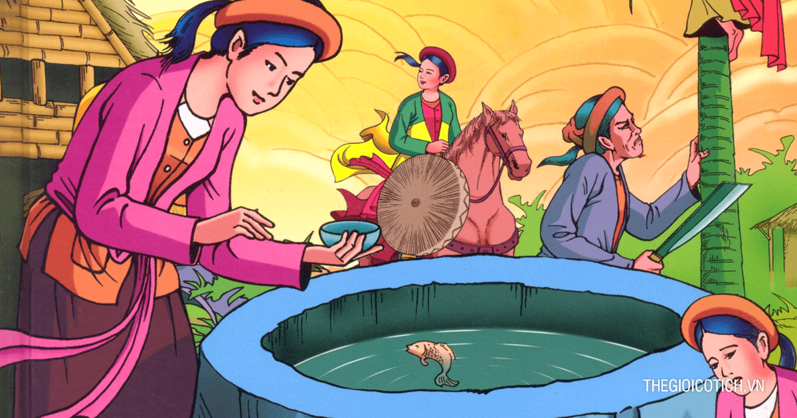

Tấm và Cám

Ngày xửa ngày xưa, có hai chị em cùng cha khác mẹ, chị tên là Tấm, em tên là Cám. Mẹ Tấm mất sớm, sau đó mấy năm cha Tấm
cũng qua đời, Tấm ở với dì ghẻ là mẹ Cám. Bà mẹ kế này rất cay nghiệt, bắt Tấm phải làm hết mọi việc nặng nhọc từ việc
nhà đến việc chăn trâu cắt cỏ. Trong khi đó Cám được nuông chiều không phải làm gì cả.
Một hôm bà ta cho hai chị em mỗi người một cái giỏ bảo ra đồng xúc tép, còn hứa "Hễ đứa nào bắt được đầy giỏ thì thưởng
cho một cái yếm đỏ". Ra đồng, Tấm chăm chỉ bắt được đầy giỏ, còn Cám thì mải chơi nên chẳng bắt được gì.
Thấy Tấm bắt được một giỏ đầy, Cám bảo chị :
- Chị Tấm ơi, chị Tấm! Đầu chị lấm, chị hụp cho sâu, kẻo về mẹ mắng.
Tin là thật, Tấm bèn xuống ao lội ra chỗ sâu tắm rửa. Cám thừa dịp trút hết tép của Tấm vào giỏ của mình rồi ba chân bốn
cẳng về trước. Lúc Tấm bước lên chỉ còn giỏ không, bèn ngồi xuống bưng mặt khóc hu hu. Nghe tiếng khóc của Tấm, Bụt liền
hiện lên hỏi :
- Làm sao con khóc ?
Tấm kể lể sự tình cho Bụt nghe, Bụt bảo:
- Thôi con hãy nín đi ! Con thử nhìn vào giỏ xem còn có gì nữa không?
Tấm nhìn vào giỏ rồi nói : - Chỉ còn một con cá bống.
- Con đem con cá bống ấy về thả xuống giếng mà nuôi. Mỗi bữa, đáng ăn ba bát thì con ăn hai còn một đem thả xuống cho
bống. Mỗi lần cho ăn con nhớ gọi như thế này:
Bống bống bang bang
Lên ăn cơm vàng cơm bạc nhà ta
Chớ ăn cơm hẩm cháo hoa nhà người.
Không gọi đúng như thế thì nó không lên, con nhớ lấy !
Nói xong Bụt biến mất. Tấm theo lời Bụt thả bống xuống giếng. Rồi từ hôm ấy trở đi, cứ mỗi bữa ăn, Tấm đều để dành cơm,
giấu đưa ra cho bống. Mỗi lần nghe Tấm gọi, bống lại ngoi lên mặt nước đớp những hạt cơm của Tấm ném xuống. Người và cá
ngày một quen nhau, và bống ngày càng lớn lên trông thấy.

Thấy Tấm sau mỗi bữa ăn thường mang cơm ra giếng, mụ dì ghẻ sinh nghi, bèn bảo Cám đi rình. Cám nấp ở bụi cây bên bờ
giếng nghe Tấm gọi bống, bèn nhẩm lấy cho thuộc rồi về kể lại cho mẹ nghe. Tối hôm ấy mụ dì ghẻ lấy giọng ngọt ngào bảo
với Tấm:
- Con ơi con! Làng đã bắt đầu cấm đồng rồi đấy. Mai con đi chăn trâu, phải chăn đồng xa, chớ chăn đồng nhà, làng bắt mất
trâu.
Tấm vâng lời, sáng hôm sau đưa trâu đi ăn thật xa. Ở nhà, mẹ con Cám mang bát cơm ra giếng cũng gọi bống lên ăn y như
Tấm gọi. Nghe lời gọi, bống ngoi lên mặt nước. Mẹ Cám đã chực sẵn, bắt lấy bống đem về nhà làm thịt.
Đến chiều Tấm dắt trâu về, sau khi ăn xong Tấm lại mang bát cơm để dành ra giếng, Tấm gọi nhưng chả thấy bống ngoi lên
như mọi khi. Tấm gọi mãi, gọi mãi, cuối cùng chỉ thấy cục máu nổi lên mặt nước. Biết là có sự chẳng lành cho bống, Tấm
òa lên khóc. Bụt lại hiện lên hỏi:
- Con làm sao lại khóc ?
Tấm kể sự tình cho Bụt nghe, Bụt bảo:
- Con bống của con, người ta đã ăn thịt mất rồi. Thôi con hãy nín đi ! Rồi về nhặt xương nó, kiếm bốn cái lọ bỏ vào, đem
chôn xuống dưới bốn chân giường con nằm.
Tấm trở về theo lời Bụt đi tìm xương bống, nhưng tìm mãi các xó vườn góc sân mà không thấy đâu cả. Một con gà thấy thế,
bảo Tấm :
- Cục ta cục tác ! Cho ta nắm thóc, ta bưới xương cho !
Tấm bốc nắm thóc ném cho gà. Gà chạy vào bếp bới một lúc thì thấy xương ngay. Tấm bèn nhặt lấy bỏ vào lọ và đem chôn
dưới chân giường như lời bụt dặn.
Ít lâu sau nhà vua mở hội trong mấy đêm ngày. Già trẻ gái trai các làng đều nô nức đi xem, trên các nẻo đường, quần áo
mớ ba mớ bẩy dập dìu tuôn về kinh như nước chảy. Hai mẹ con Cám cũng sắm sửa quần áo đẹp để đi trẩy hội. Thấy Tấm cũng
muốn đi, mụ dì ghẻ nguýt dài, sau đó mụ lấy một đấu gạo trộn lẫn với một đấu thóc, bảo Tấm:
- Khi nào nhặt riêng gạo và thóc ra hai đấu thì mới được đi xem hội.
Nói đoạn, hai mẹ con quần áo xúng xính lên đường. Tấm tủi thân òa lên khóc. Bụt lại hiện lên hỏi:
- Làm sao con khóc?
Tấm chỉ vào cái thúng, thưa:
- Dì con bắt phải nhặt thóc ra thóc, gạo ra gạo, rồi mới được đi xem hội, lúc nhặt xong thì hội đã tan rồi còn gì mà
xem.
Bụt bảo: - Con đừng khóc nữa. Con mang cái thúng đặt ra giữa sân, để ta sai chim sẻ xuống nhặt giúp.
- Nhưng ngộ nhỡ chim sẻ ăn mất thì khi về con vẫn cứ bị đòn.
- Con cứ bảo chúng nó thế này:
Rặt rặt (con chim sẻ) xuống nhặt cho tao
Ăn mất hạt nào thì tao đánh chết
Thì chúng nó sẽ không ăn của con đâu.
Bụt vừa dứt lời, ở trên không có một đàn chim sẻ đáp xuống sân nhặt thóc ra một đằng, gạo ra một nẻo. Chúng nó lăng xăng
ríu rít chỉ trong một lát đã làm xong, không suy suyển một hạt. Nhưng khi chim sẻ bay đi rồi, Tấm lại nức nở khóc. Bụt
lại bảo:
- Con làm sao lại khóc?
- Con rách rưới quá, người ta không cho con vào xem hội.
- Con hãy đào những cái lọ xương bống đã chôn ngày trước lên thì sẽ có đủ thứ cho con trẩy hội.
 Tấm vâng lời, đi đào các lọ lên. Đào lọ thứ nhất lấy ra được một cái áo mớ ba, một cái áo xống lụa, một cái yếm lụa điều
và một cái khăn nhiễu. Đào lọ thứ hai lấy ra được một đôi hài thêu. Đào lọ thứ ba thì thấy một con ngựa bé tí, nhưng vừa
đặt con ngựa xuông đất bỗng chốc nó đã hí vang lên và biến thành ngựa thật. Đào đến lọ cuối cùng thì lấy ra được một bộ
yên cương xinh xắn.
Tấm vâng lời, đi đào các lọ lên. Đào lọ thứ nhất lấy ra được một cái áo mớ ba, một cái áo xống lụa, một cái yếm lụa điều
và một cái khăn nhiễu. Đào lọ thứ hai lấy ra được một đôi hài thêu. Đào lọ thứ ba thì thấy một con ngựa bé tí, nhưng vừa
đặt con ngựa xuông đất bỗng chốc nó đã hí vang lên và biến thành ngựa thật. Đào đến lọ cuối cùng thì lấy ra được một bộ
yên cương xinh xắn.
---END---